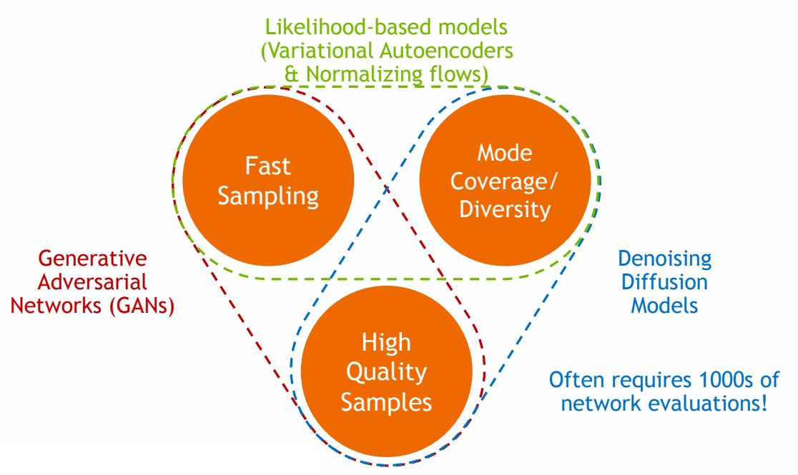
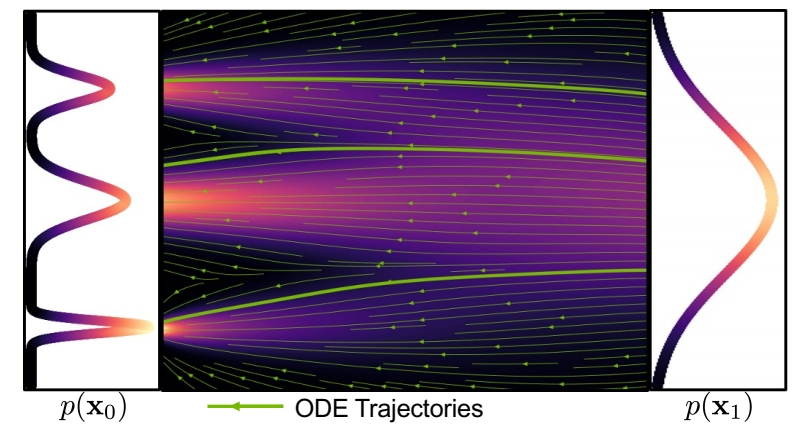
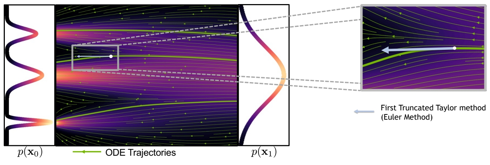
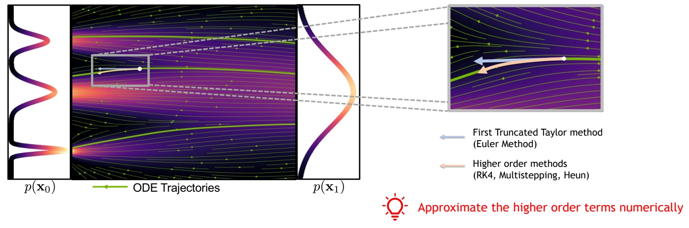
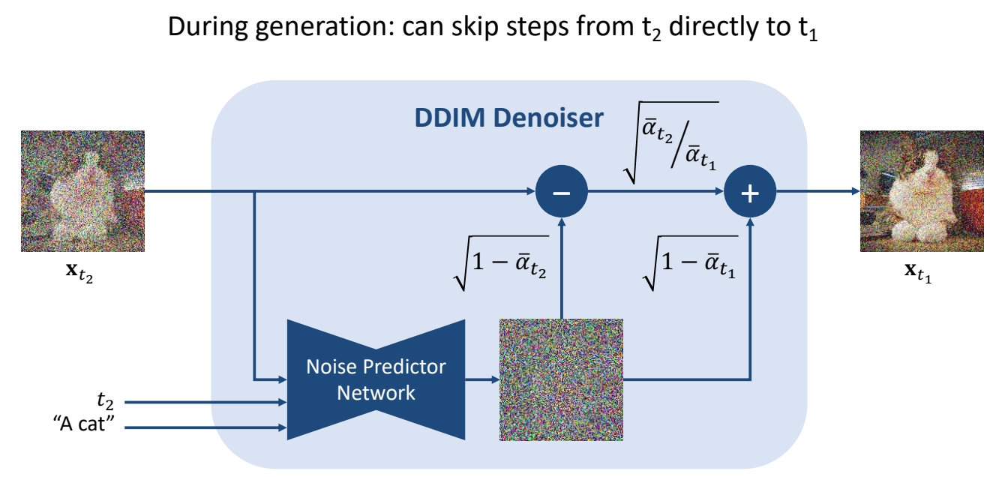
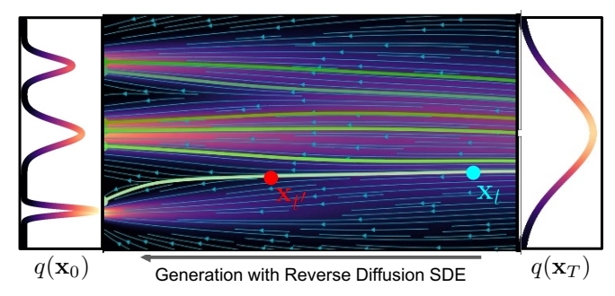
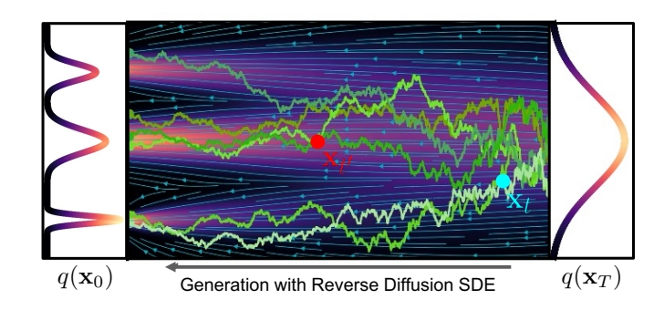
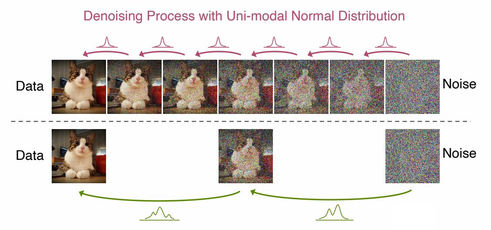
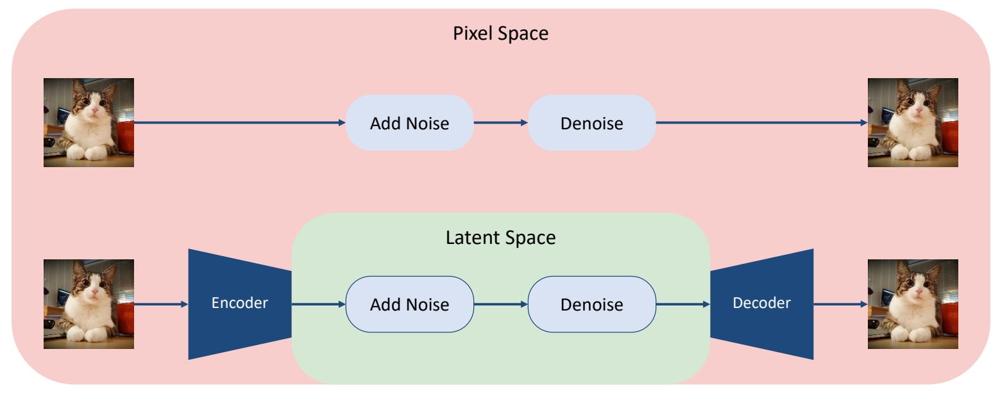
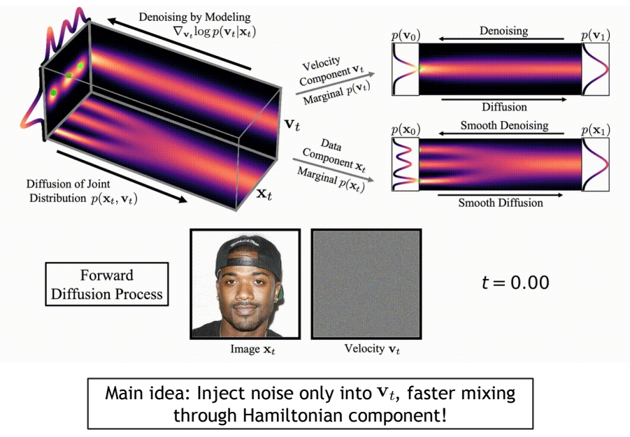

P38
Accelerated Sampling
P39
The generative learning trilemma

🔎 Tackling the Generative Learning Trilemma with Denoising Diffusion GANs, ICLR 2022
其中Diffusion based生成模型的主要问题是生成速度慢，因此需要在保持高采样质量和多样性的前提下，针对采样速度慢的问题进行加速。
P41
Acceleration Techniques
- Advanced ODE/SDE Solvers
- Distillation Techniques
- Low-dim. Diffusion Processes
- Advanced Diffusion Processes
P42
Advanced ODE/SDE Solvers
✅ ODE 实现 std normal 分布与真实数据分布之间的映射。
P43
Generative ODEs
Solve ODEs with as little function evaluations as possible
$$ dx=\epsilon _\theta (x,t)dt $$

- 一阶方法（Euler 方法）：每个时间步简化为线性过程。当 step 较大时，会与 GT 有较大的偏离。
P44

- 高阶方法
P45

P46
扩散模型 ODE/SDE 求解器的相关工作

| ID | Year | Name | Note | Tags | Link |
|---|---|---|---|---|---|
| 2 | 2021 | Denoising Diffusion Implicit Models (DDIM) | ✅ DDIM：可以直接从 \(t_2\) 去噪到 \(t_1\). ✅ 把 \(x_t\) 去掉一个 nolse 之后，不是 sample 另一个noise，而是把原来的 noise 乘以一个系数再加回去。 | link | |
| 2021 | Score-Based Generative Modeling through Stochastic Differential Equations | Runge-Kutta adaptive step-size ODE solver | |||
| 2021 | Gotta Go Fast When Generating Data with Score-Based Models | Higher-Order adaptive step-size SDE solver | |||
| 2021 | Denoising Diffusion Implicit Models | Reparametrized, smoother ODE | |||
| 2022 | gDDIM: Generalized denoising diffusion implicit models | Reparametrized, smoother ODE | |||
| 2022 | Pseudo Numerical Methods for Diffusion Models on Manifolds | Higher-Order ODE solver with linear multistepping | |||
| 2022 | Fast Sampling of Diffusion Models with Exponential Integrator | Exponential ODE Integrators | |||
| 2022 | DPM-Solver: A Fast ODE Solver for Diffusion Probabilistic Model Sampling in Around 10 Steps | Exponential ODE Integrators | |||
| 2022 | DPM-Solver++: Fast Solver for Guided Sampling of Diffusion Probabilistic Models | Exponential ODE Integrators | |||
| 2022 | Elucidating the Design Space of Diffusion-Based Generative Models | Higher-Order ODE solver with Heun’s Method | |||
| 2023 | UniPC: A Unified Predictor-Corrector Framework for Fast Sampling of Diffusion Models | ||||
| 2023 | Parallel Sampling of Diffusion Model | ||||
| 2023 | A Geometric Perspective on Diffusion Models |
✅ 这些solvers可以以plug-in的方式使用，且通常能比DDPM更快收敛。
Distillation Techniques
P48
ODE Distillation

Can we train a neural network to directly predict \(\mathbf{x} _{{t}'} \) given \(\mathbf{x} _t\)?
✅ \(\mathbf{x} _{{t}'} \)与\(\mathbf{x} _t\)的关系是确定的。
P49
| ID | Year | Name | Note | Tags | Link |
|---|---|---|---|---|---|
| 2022 | Progressive distillation for fast sampling of diffusion models | 蒸馏 | link | ||
| 2023 | On Distillation of Guided Diffusion Models | Award Candidate | link | ||
| 2023 | Consistency Models | link |
P52
SDE Distillation

Can we train a neural network to directly predict distribution of \(\mathbf{x} _ {{t}'} \) given \(\mathbf{x} _ t \) ?
✅ \(\mathbf{x} _ t\) 与 \( \mathbf{x} _ {{t}' }\) 没有必然的联系，得到的是 \( \mathbf{x} _ {{t}' }\) 的分布。
但Normal assumption in denoising distribution holds only for small step
✅ 从 \(t\) 与 \({t}'\) 的差距过大时，normal 分布不足以表达 \(q(\mathbf{x} _ {{t}'}｜\mathbf{x} _ t)\).

因此Requires more complicated functional approximators!，例如GAN或energy-based。
| ID | Year | Name | Note | Tags | Link |
|---|---|---|---|---|---|
| 2022 | Tackling the Generative Learning Trilemma with Denoising Diffusion GANs | GAN | link | ||
| 2021 | Learning energy-based models by diffusion recovery likelihood | Energy-based models |
P54
Training-based Sampling Techniques
| ID | Year | Name | Note | Tags | Link |
|---|---|---|---|---|---|
| 2021 | Knowledge Distillation in Iterative Generative Models for Improved Sampling Speed | Knowledge distillation | |||
| 2022 | Learning Fast Samplers for Diffusion Models by Differentiating Through Sample Quality | Learned Samplers | |||
| 2023 | Fast Sampling of Diffusion Models via Operator Learning | Neural Operators | |||
| 2023 | Wavelet Diffusion Models Are Fast and Scalable Image Generators | Wavelet Diffusion Models | |||
| 2022 | GENIE: Higher-Order Denoising Diffusion Solvers | Distilled ODE Solvers |
P56
Low-dim Diffusion Process
Cascaded Generation

Cascaded Diffusion Models outperform Big-GAN in FID and IS and VQ-VAE2 in Classification Accuracy Score.
| ID | Year | Name | Note | Tags | Link |
|---|---|---|---|---|---|
| 2021 | Cascaded Diffusion Models for High Fidelity Image Generation | link | |||
| 2022 | Hierarchical Text-Conditional Image Generation with CLIP Latents | ||||
| 2022 | Photorealistic Text-to-Image Diffusion Models with Deep Language Understanding |
P57
Latent Diffusion Models

Main Idea：
Variational autoencoder + score-based prior
Encoder maps the input data to an embedding space
Denoising diffusion models are applied in the latent space
P58
Advantages:
(1) The distribution of latent embeddings close to Normal distribution \(\to \) Simpler denoising, Faster synthesis!
(2) Latent space \(\to \) More expressivity and flexibility in design!
(3) Tailored Autoencoders \(\to \) More expressivity, Application to any data type (graphs, text, 3D data, etc.)!
| ID | Year | Name | Note | Tags | Link |
|---|---|---|---|---|---|
| 2021 | Score-based generative modeling in latent space | End-to-End Training objective ✅ 这篇文章对 VAE 和 diffusion 一起进行训练，文章的创新点是，利用 score matching 中的信息来计算 cross entropy. | |||
| 45 | 2022 | High-Resolution Image Synthesis with Latent Diffusion Models | Two-stage Training，先训E&D，再训diffusion。每次需要训练的网络都不大。 | link | |
| 2021 | D2C: Diffusion-Denoising Models for Few-shot Conditional Generation | ||||
| 2022 | Score-Guided Intermediate Layer Optimization: Fast Langevin Mixing for Inverse Problems | ||||
| 2022 | Dimensionality-Varying Diffusion Process |
The efficiency and expressivity of latent diffusion models + open-source access fueled a large body of work in the community
Advanced Diffusion Models
✅ 这一部分没有讲
P63
ODE interpretation
把ODE看作是Deterministic generative process

- DDIM sampler can be considered as an integration rule of the following ODE:
$$ d\mathbf{\bar{x} } (t)=\epsilon ^{(t)} _ \theta(\frac{\mathbf{\bar{x} } (t)}{\sqrt{\eta ^2+1}} )d\eta (t); \mathbf{\bar{x} } =\mathbf{x} / \sqrt{\bar{a} },\eta = \sqrt{1-\bar{a}} / \sqrt{\bar{a } } $$
-
Karras et al. argue that the ODE of DDIM is favored, as the tangent of the solution trajectory always points towards the denoiser output.
-
This leads to largely linear solution trajectories with low curvature à Low curvature means less truncation errors accumulated over the trajectories.
🔎 Song et al., “Denoising Diffusion Implicit Models”, ICLR 2021.
🔎 Karras et al., “Elucidating the Design Space of Diffusion-Based Generative Models”, arXiv 2022.
| ID | Year | Name | Note | Tags | Link |
|---|---|---|---|---|---|
| 2022 | Progressive distillation for fast sampling of diffusion models | 通过修改参数化方式来提升“减少sampling steps”的稳定性。 | link |
P64
“Momentum-based” diffusion
Introduce a velocity variable and run diffusion in extended space

Dockhorn et al., “Score-Based Generative Modeling with Critically-Damped Langevin Diffusion”, ICLR 2022.
P65
Additional Reading
- Schrödinger Bridge:
🔎 Bortoli et al., "Diffusion Schrödinger Bridge", NeurIPS 2021
🔎 Chen et al., “Likelihood Training of Schrödinger Bridge using Forward-Backward SDEs Theory”, ICLR 2022
- Diffusion Processes on Manifolds:
🔎 Bortoli et al., "Riemannian Score-Based Generative Modelling", NeurIPS 2022
- Cold Diffusion:
🔎 Bansal et al., "Cold Diffusion: Inverting Arbitrary Image Transforms Without Noise", arXiv 2022
- Diffusion for Corrupted Data:
🔎 Daras et al., "Soft Diffusion: Score Matching for General Corruptions", TMLR 2023
🔎 Delbracio and Milanfar, "Inversion by Direct Iteration: An Alternative to Denoising Diffusion for Image Restoration", arXiv 2023
🔎 Luo et al., "Image Restoration with Mean-Reverting Stochastic Differential Equations", ICML 2023
🔎 Liu et al., “I2SB: Image-to-Image Schrödinger Bridge”, ICML 2023
- Blurring Diffusion Process:
🔎 Hoogeboom and Salimans, "Blurring Diffusion Models", ICLR 2023
🔎 Rissanen et al, “Generative Modelling With Inverse Heat Dissipation”, ICLR 2023
本文出自CaterpillarStudyGroup，转载请注明出处。
https://caterpillarstudygroup.github.io/ImportantArticles/